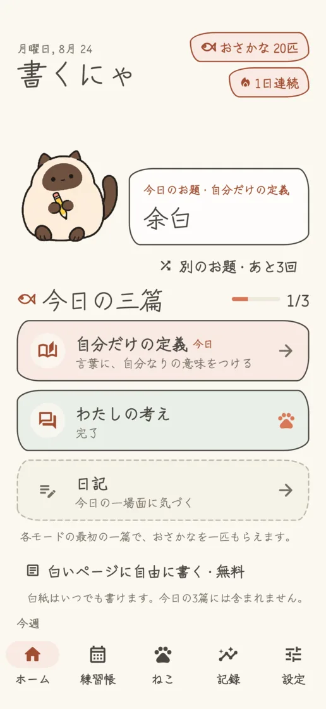
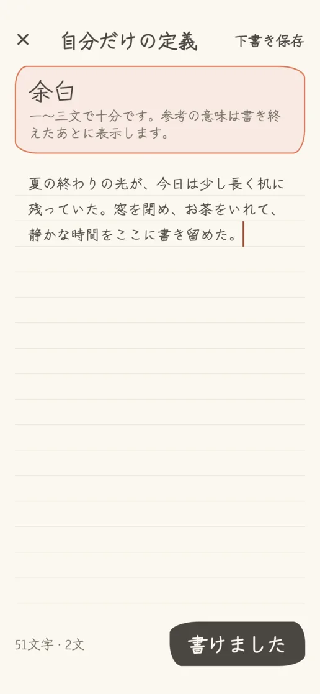
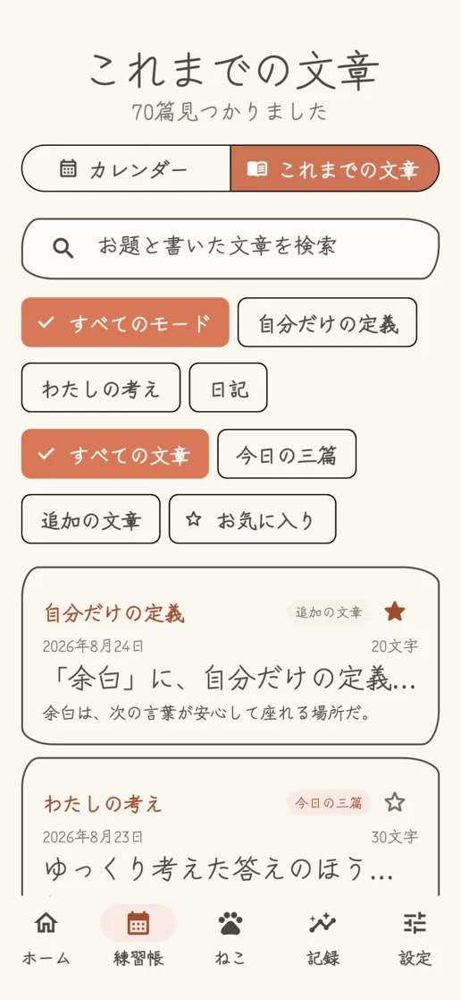
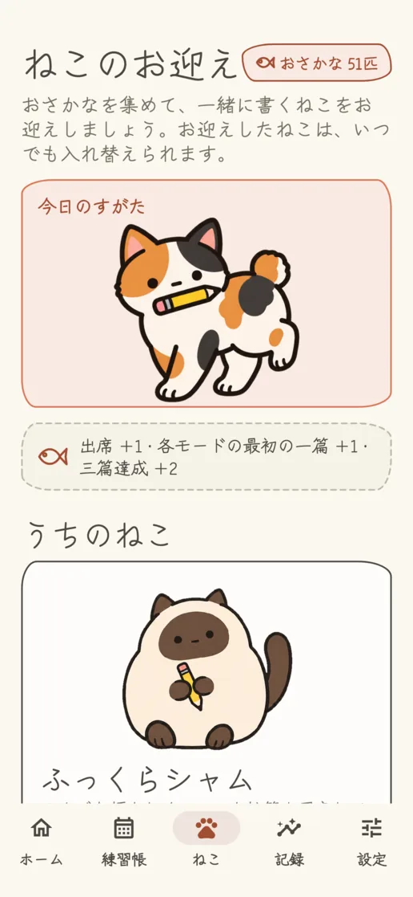
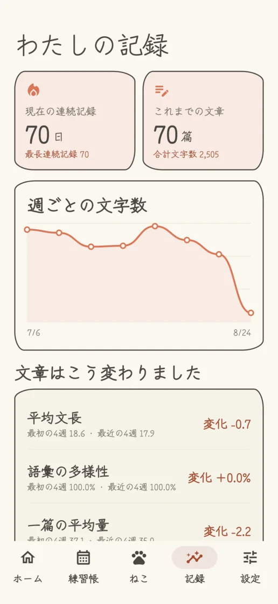
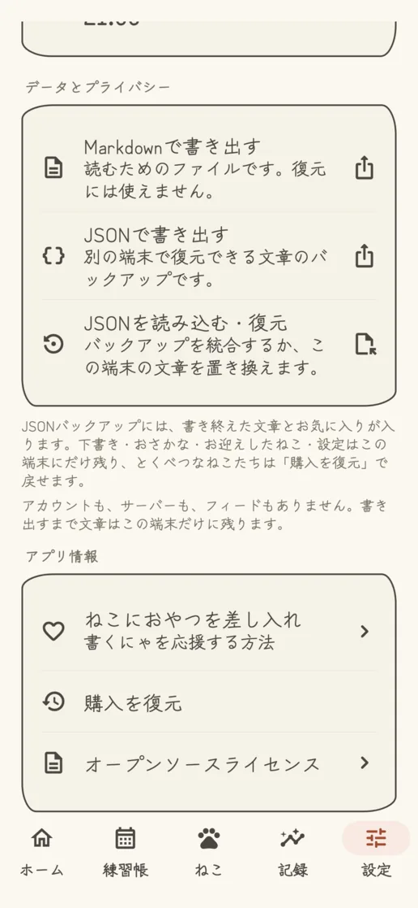

自分だけの定義
ひとつの言葉に自分なりの定義をつけ、書き終えたあとに参考の意味を読めます。
ねこと育てる毎日の文章習慣
書くにゃは、正直な一文から書く習慣を育てる、静かでプライベートな文章アプリです。言葉、問いかけ、今日の一場面を、となりのねこと一緒に文章にしてみましょう。
 App Storeで近日公開
App Storeで近日公開無料 · iPhone・Android · English · 日本語 · 한국어


3つの書き方
各モード120、合計360のお題を、英語・日本語・韓国語で自然に用意しました。合わなければ選び直せて、白紙からも書けます。
ひとつの言葉に自分なりの定義をつけ、書き終えたあとに参考の意味を読めます。
問いかけに立ち止まり、今の考えを自分の言葉で書きます。
お題をきっかけに、または白紙から、今日の小さな場面を残します。
アプリプレビュー




サーバー、SNS、分析、追跡はありません。書くことは完全にオフラインでできます。MarkdownとJSONで書き出し、JSONから復元できます。広告やサブスクリプションはなく、とくべつなねこたちと差し入れで応援できます。